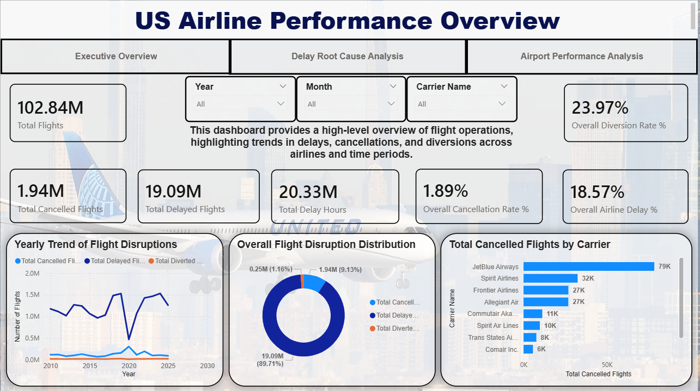
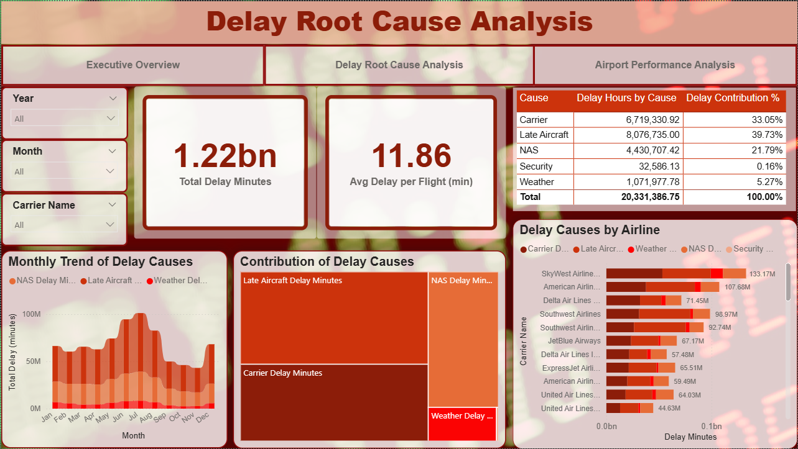
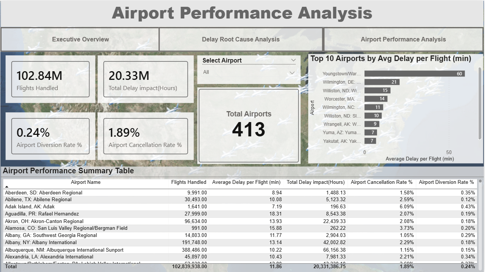

U.S. Flight Arrival Performance Analysis
A comprehensive analysis of U.S. airline performance (2010–2025), uncovering delay patterns, root causes, and airport-level inefficiencies using SQL and Power BI.
// Project Overview
This project analyzes U.S. flight arrival performance using the Bureau of Transportation Statistics (BTS) On-Time dataset. The analysis covers over 100 million flights from 2010 to 2025, focusing on delays, cancellations, diversions, and operational efficiency. SQL Server was used for large-scale data transformation, while Power BI enabled interactive dashboards for trend analysis and decision-making insights.
// Key Questions Explored
// Methodology
Retrieved flight performance data from the U.S. Bureau of Transportation Statistics (TranStats), covering 2010–2025.
Processed raw datasets in SQL Server, handled missing values, standardized delay metrics, and ensured data consistency.
Created optimized SQL views at airline and airport levels to compute KPIs such as delays, cancellations, and diversion rates.
Built interactive Power BI dashboards with DAX measures for delay impact, averages, and root cause analysis.
// Key Insights
// Dashboards


